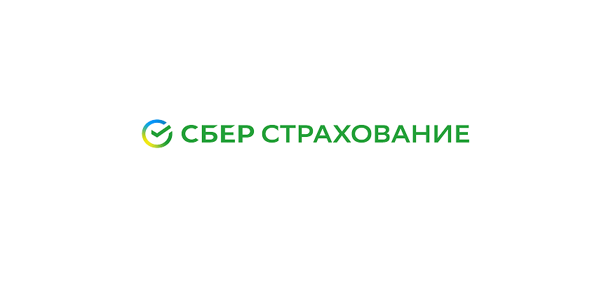
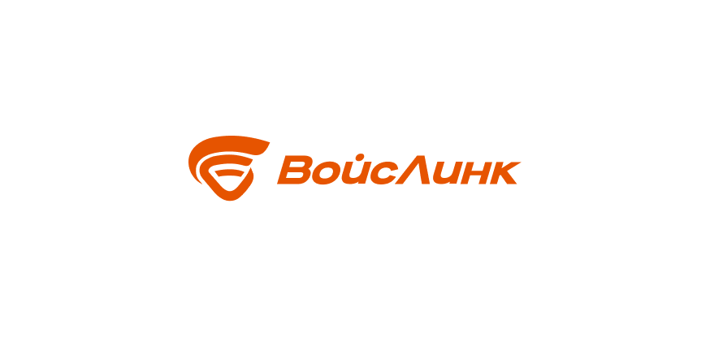
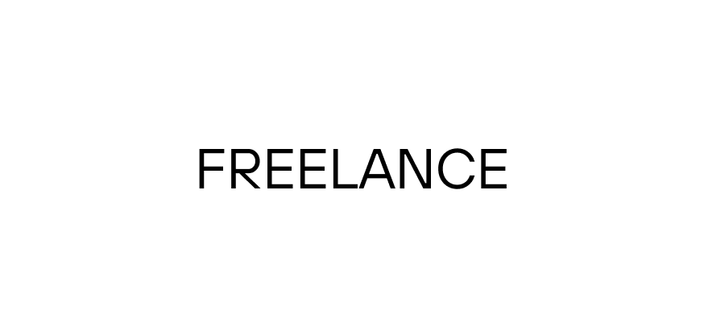
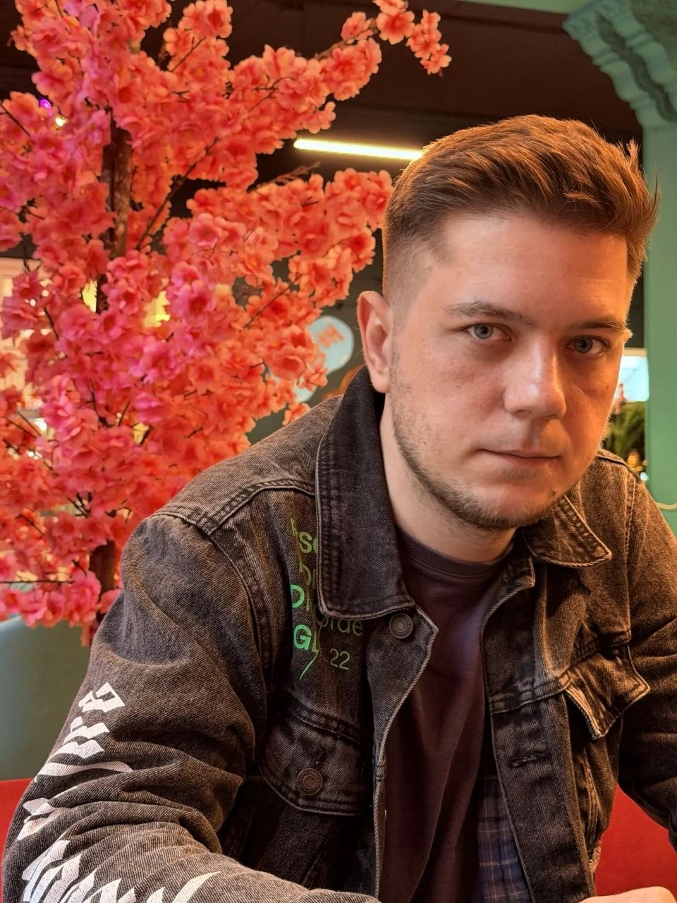

↳ интерфейсы
Интерфейсы с большим количеством данных
Карты, панели, таблицы и формы, в которых пользователь не теряется.
Senior UX/UI дизайнер. Открыт к предложениям
--:-- день
схема, сутки за 4 минуты
Три года делал ГИС управления транспортными потоками города. До этого обновлял сайт и калькуляторы Сбер Страхования.
[ в цифрах ]
+15%
к конверсии ключевых продуктов Сбер Страхования после редизайна
1–1,5 мес.
экономии на выводе каждого нового модуля ГИС благодаря дизайн-системе
4+ года
в продуктовом дизайне
6 лет
в маркетинге до этого: понимаю метрики и язык бизнеса
[ что я делаю ]
↳ интерфейсы
Карты, панели, таблицы и формы, в которых пользователь не теряется.
↳ системы
Библиотеки компонентов, которыми пользуются и дизайнеры, и фронтенд.
↳ метрики
Связываю решения с конверсией и сроками вывода продукта.
↳ графика
Графика и иллюстрации для маркетинга и рекламных кампаний.
[ работы ]
2022–2023

+15% к конверсии ключевых продуктов
Смотреть макеты2023–2026

Каждый новый модуль выходит на 1–1,5 месяца быстрее
Детали под NDA, подробно расскажу на собеседовании.
Смотреть макетыЧастные заказчики

[ путь ]
Окончил МПГУ им. Ленина в 2015 году по специальности «политолог». На 5 курсе, как один из лучших студентов потока, был удостоен стажировки в Государственной Думе РФ.

↳ 2015–2021
Рекламный креатив: баннеры, сценарии, съёмка и монтаж промо-роликов. Научился мерить работу цифрами.
↳ 2021–2022
Стратегия продвижения, бюджет, контент-план и система KPI. Охваты выросли больше чем на 30%.
↳ 2022–2023
Редизайн сайта и калькуляторов, интерфейсы мобильного приложения, визуальная система для рекламы.
↳ 2023–2026
ГИС управления транспортными потоками города и дизайн-система для дизайнеров и фронтенда.
Сейчас
Senior UX/UI или продуктовый дизайнер, полная занятость: офис, гибрид или удалёнка.
[ контакты ]
Ищу работу в продуктовой команде: полная занятость, офис, гибрид или удалёнка. Быстрее всего отвечаю в Telegram.